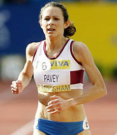

Track & Field
Hon Championship secretary Janet Phillips
Team Managers:
Senior,U20 and U17 Women | Sonya Ellis
Senior,U20,U17 Men | Sonya Ellis
U13,U15,Girls and Boys | Derek Smith
County Championships Track&Field
2019
Devon County Track and Field Championships, Sunday May 12th at Exeter Arena | RESULTS
Combined Events - Sunday 19th May, Exeter Arena - CANCELLED
Devon 10000m Championships and mile races at Exeter on Wednesday 19th June. This is being organised by City Runs on behalf of the County | INFO
2018:
Devon County Track and Field Championships May 13th, Exeter Arena. View: RESULTS
Combined Events - Sunday 20th May, Exeter Arena, View: RESULTS
Devon 10000m Championships and mile races at Exeter on Wednesday 20th June. This is being organised by City Runs on behalf of the County | RESULTS
2017:
Main championships - Sunday 14th May Exeter | Results
Combined events - Sunday 21st May Exeter | Results: U13 Boys | U13 Girls | U15 Boys | U15 Girls | U17 Men | U17 Ladies
10,000M Wednesday - 21st June Tavistock | 10k Results
Open Mile - 21st June Tavistock | Results
2016
Sunday 15th May Exeter Arena | Results
Wednesday 22nd June 10000 metre Tavistock | Results
Devon Open Series 2019
The Devon Open series consists of four fixtures , dates of which are as follows:
Sunday April 28th, Plymouth | Results
Sunday June 9th, Braunton | Results
Sunday July 14th, Tavistock | Results
Sunday August 11th, Braunton | Results
Entries are open to all. U13's and above must have an EA number unless competing for their school. U10's and U11's do not need one. The U10's do a QuadKids competition at all 4 events and the U11's do Quadkids at just Meetings 1 and 3. Athletes can do 3 events plus a relay (except for QuadKIds). U20 do 5 events (including relay) and Seniors can do 5 events plus a relay.
Everyone who competes in all 4 events will get a medal.
Entry Fee £5 juniors and £6 Seniors. The timetable is attached.
There is a Facebook page for the event - https://www.facebook.com/devontrackandfield/
